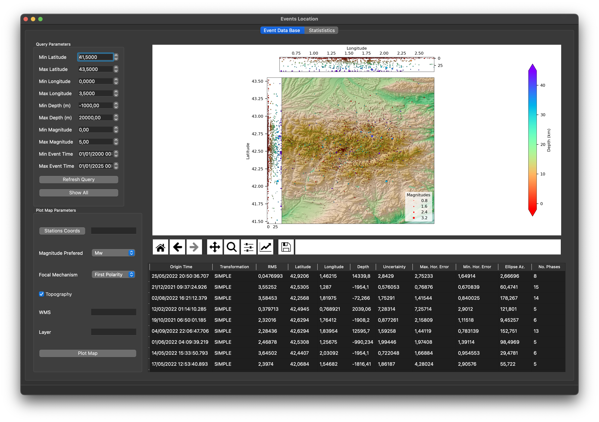
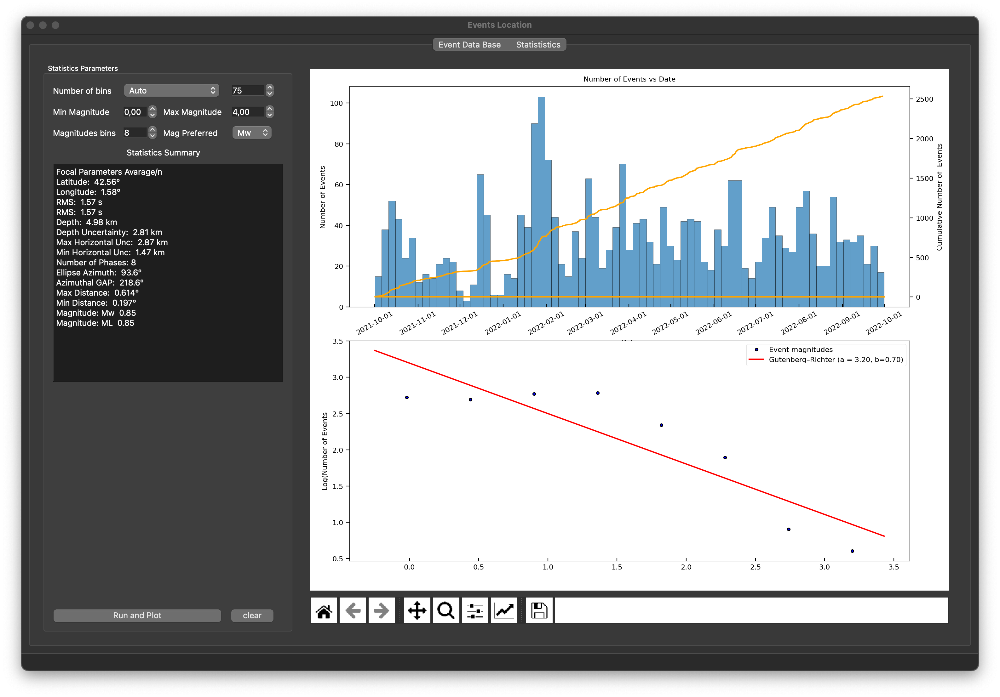
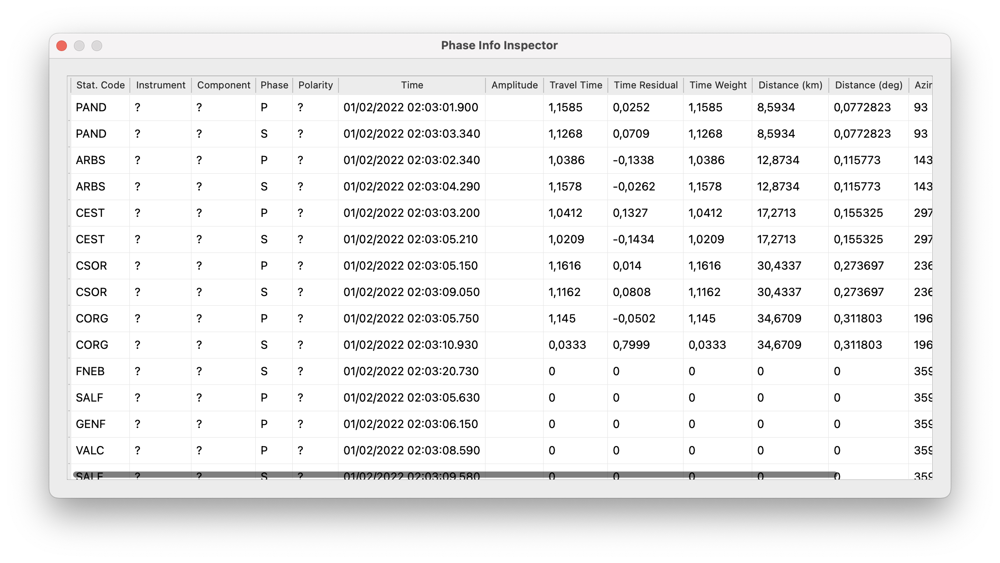

Database
The Database sub-module is designed to incorporate all the results you can obtain from Earthquake location and Moment Tensor Inversion. It is possible to make queries to the data base, for example searching earthquake locations by a geographic frame or in a specific time spam. Moreover you can plot the results of your query in a map.
 
Visual Options
Double Clik near an epicenter in the map and it will be hilighted the corresponding row in the table.
Double Click in a epicenter in the table and (if here is MTI information) it will be plot the beachball in the map
Click with right button in a table row and select highlight event to visualize the exact event in the map.
Click with right button to get the phases information corresponding to the selected event

Populate your DB
- Pick in File/Read Hyp Folder to incorporate all information contained inside hyp folders. Hyp folders are the file output from location.
- Pick in File/Magnitudes to populate your database with the information from the output file obtained in source toolbox.
- Pick in File/MTI to populate your database with the information from the output file obtained in MTI toolbox.
Make a Query
Choose the options on the left widget to filter the hypocenter inside your DataBase. The earthquakes shown in the table can be used in the MTI GUI when runs the inversion.